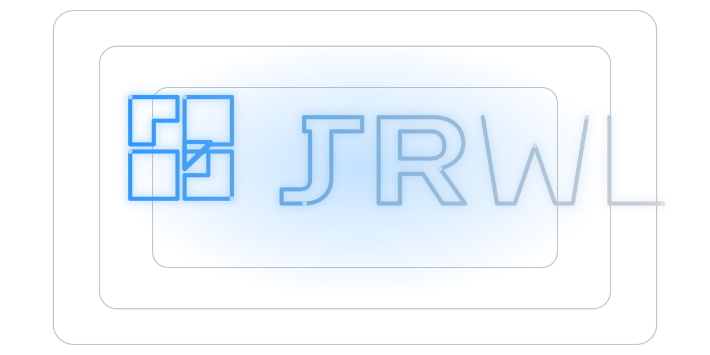

LiveWater utility finance platform
Vesipolku
Vesipolku imports utility company data from a public API, models long-term investment scenarios, and calculates tariff levels plus yearly increases.

Software Developer | Turku, Finland
I build and run web products end-to-end: schema, APIs, frontend, deploys, and maintenance. Vesipolku is live and used for long-range utility pricing and investment planning.

Two live apps, two static prototypes, and one product in development.
LiveWater utility finance platform
Vesipolku imports utility company data from a public API, models long-term investment scenarios, and calculates tariff levels plus yearly increases.
LivePortfolio and contact hub
This is my portfolio site: project status, live links, and direct contact details.
PrototypeStatic company website
Static website I built for a relative's company, ProboCons Oy. It presents services clearly and makes contact easy.
PrototypeSpeech therapy website
Static site prototype for a speech therapy service with multilingual pages and direct contact flow.
In developmentAccountability platform
PNYX tracks political promises with source links, milestone checkpoints, and status history.
I ship in short iterations, keep scope tight, and build for maintainability from day one. Most of my work is solo, so reliability, clear documentation, and clean handover are part of the process, not an afterthought.
Before software, I worked in safety-critical maritime roles and completed reserve officer training. It taught me procedure discipline, ownership, and decision-making when mistakes have real consequences.
Open to junior backend or full-stack roles.